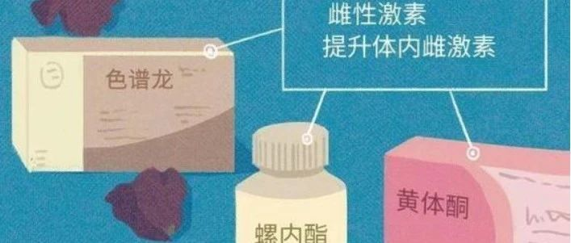

跨性别者要不要使用激素治疗？激素会带来怎样的变化？
HRT（激素替代治疗）
跨性别人群经常会提到HRT，其实就是一种激素替代治疗。
跨性别人群需要激素替代治疗，对自己的身体不能接纳的时候，可能需要一些外源性的激素帮助抑制自身的性别特征，或者是表达一些相反性征的性别特征，在不做手术的前提下可以通过激素替代改善。
一
注意：
使用激素治疗也会有一定风险，如果需要，建议在医院医生的指导下，在有严密监测的前提下应用。通常使用之前需要进行全面体检，确保在没有潜在风险的前提下再使用激素治疗。使用了以后也会详细记录激素带来的作用以及风险，要求使用激素治疗的跨性别者，须每三个月到医院复诊一次，排除是否已经出现风险，如果存在，可能就需要调整用量，甚至会停药，或者针对已经出现的并发症进行内科治疗。
End